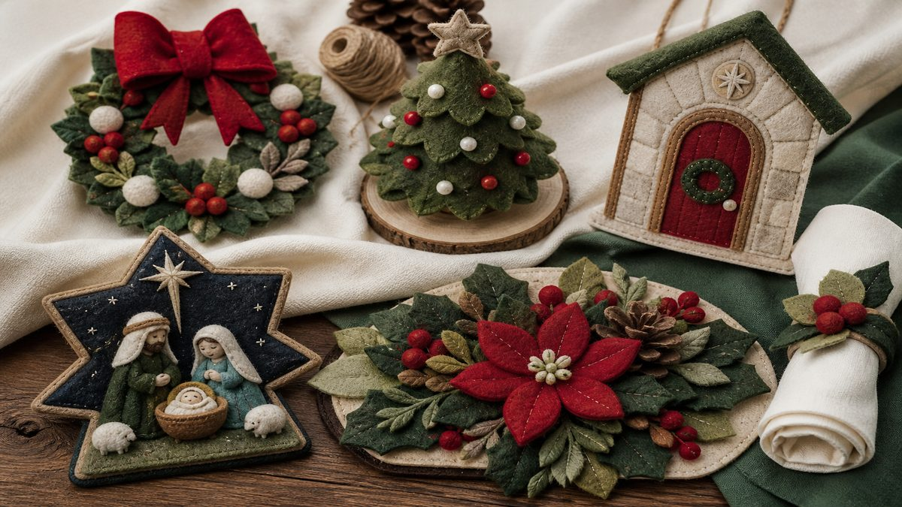

Guirlanda de Natal
Para receber o Natal já na porta.
Seu presépio já está garantido ✓
Use os mesmos materiais e o mesmo tipo de costura para criar outras peças de Natal para a sua casa.

Adicione a Coleção Natal Feito à Mão ao seu pedido
Pagamento único · Acesso digital
Adicionar ao meu pedido
O momento
Depois de montar o presépio, você já conhece o tipo de material e o jeito de trabalhar. A Coleção Natal Feito à Mão aproveita esse mesmo momento para você criar outras peças e espalhar o feito à mão pela casa.
A coleção
Para receber o Natal já na porta.
Uma peça pequena para aparador, mesa ou cantinho especial.
Um detalhe feito à mão logo na entrada.
Para levar o clima do Natal para a mesa.
Detalhes em feltro para acompanhar a ceia.
Peças pequenas que também podem virar lembranças de Natal.
A ideia é simples: imprimir, fazer e colocar no lugar.
Uma guirlanda na porta. Uma peça na mesa. Um detalhe perto da árvore. Tudo seguindo o mesmo clima artesanal que começou com o seu presépio.
Oferta especial após sua compra
Adicionar ao meu pedido agora